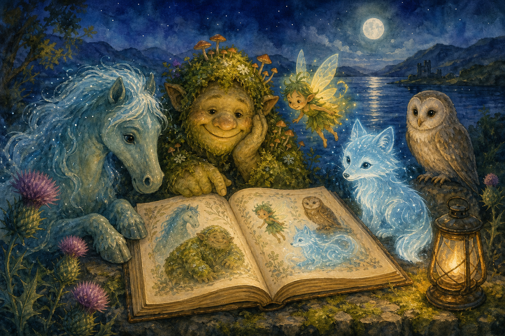

Bestiary
Friendly creatures, gentle problems, and encounter ideas
How to use creatures
In Thistlebright, a creature is a story moment. It might be scared, proud, hungry, lonely, sleepy, or confused. Heroes are encouraged to notice feelings first.
- Use creatures as friends, messengers, puzzles, guardians, or comic interruptions.
- For this age, avoid “kill it” goals. Use helping, calming, racing, finding, sharing, or promising.
- If a creature is dangerous, make the danger environmental: slippery bank, loud roar, storm cloud, falling pine cones.
| Creature role | At the table |
|---|---|
| Friend | Offers help after kindness. |
| Guardian | Asks for a promise or proof. |
| Mystery | Acts strangely because it is worried. |
| Comic trouble | Makes a safe mess that changes the scene. |
Loch and glen creatures
Moon-Kelpie Foal
Feels: Lonely and nervous.
Wants: Its moon-bell returned.
Helps by: Carries one hero safely across shallow water.
Complication: Splashes the map when startled.
Gentle approach: notice the feeling, offer one kind thing, then roll only if the creature is still unsure.
BraveKindQuick Pick one depending on the child’s idea.
Thistle Sprite
Feels: Proud and tiny.
Wants: Someone to admire its thorn crown.
Helps by: Shows a hidden fairy path.
Complication: Gets offended by rude pointing.
Gentle approach: notice the feeling, offer one kind thing, then roll only if the creature is still unsure.
BraveKindQuick Pick one depending on the child’s idea.
Moss Troll Napper
Feels: Sleepy and warm-hearted.
Wants: A quieter place to nap.
Helps by: Lifts a log bridge.
Complication: Snores bubbles that float away clues.
Gentle approach: notice the feeling, offer one kind thing, then roll only if the creature is still unsure.
BraveKindQuick Pick one depending on the child’s idea.
Silver Fox Familiar
Feels: Curious and polite.
Wants: A riddle answered.
Helps by: Leads heroes to tracks.
Complication: Only speaks in compliments.
Gentle approach: notice the feeling, offer one kind thing, then roll only if the creature is still unsure.
BraveKindQuick Pick one depending on the child’s idea.
Forest and sky creatures
Rowan Owl
Feels: Wise but forgetful.
Wants: Help remembering a name.
Helps by: Sees through mist.
Complication: Calls everyone “young acorn”.
Scene seed: it appears while the heroes are already trying to help someone else.
Best first move ask what the creature feels.
Heather Hare
Feels: Fast and worried.
Wants: Its red ribbon untangled.
Helps by: Carries a message.
Complication: Keeps changing direction.
Scene seed: it appears while the heroes are already trying to help someone else.
Best first move ask what the creature feels.
Teacup Dragon
Feels: Hot-tempered but small.
Wants: A biscuit and apology.
Helps by: Boils water for tea or steam clues.
Complication: Sneezes sparks into puddles.
Scene seed: it appears while the heroes are already trying to help someone else.
Best first move ask what the creature feels.
Loch Lantern Jelly
Feels: Shy and glowing.
Wants: A dark pool made less lonely.
Helps by: Lights underwater steps.
Complication: Floats away if shouted at.
Scene seed: it appears while the heroes are already trying to help someone else.
Best first move ask what the creature feels.
Tiny odd creatures
Bog-Boot Brownie
Feels: Helpful and muddy.
Wants: A pair of boots to clean.
Helps by: Finds footprints.
Complication: Cleans the wrong thing first.
Cloud Sheep
Feels: Dreamy and soft.
Wants: A shepherd star.
Helps by: Makes a fluffy bridge.
Complication: Drifts when children giggle.
Creature builder
| Roll | Animal | Fairy twist | Feeling |
|---|---|---|---|
| 1 | Fox | silver whiskers | worried |
| 2 | Hare | bell tail | excited |
| 3 | Owl | moon glasses | sleepy |
| 4 | Pony | kelp mane | lonely |
| 5 | Dragon | teacup size | proud |
| 6 | Sheep | cloud wool | confused |
Finish the entry
Add one line for what the creature wants, one line for how it helps, and one safe complication.
Make it child-friendly
Replace defeat with help, chase, song, puzzle, promise, snack, or finding a lost thing.
Quick stat choice
Brave for scary noises, Kind for feelings, Quick for movement or noticing.
Reward idea
A friend, clue, safe path, tiny charm, bedtime-song note, or funny drawing prompt.